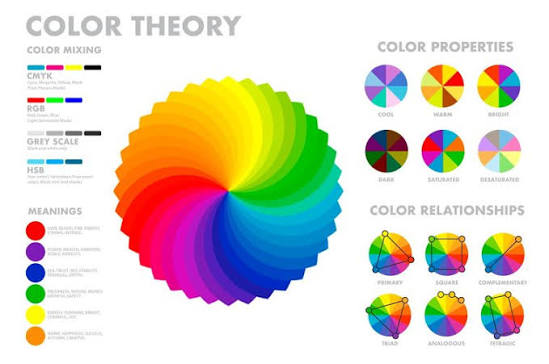

สี

ในงานดิจิทัลอาร์ต ระบบสีและการเลือกใช้สีมีความสำคัญมาก เพราะหน้าจอคอมพิวเตอร์และแท็บเล็ตแสดงผลแตกต่างจากการพิมพ์บนกระดาษครับ นี่คือพื้นฐานเรื่องสีที่คุณจำเป็นต้องรู้ในการทำงานดิจิทัลอาร์ต: ## 1. โหมดสีหลักที่ต้องเลือกใช้ (Color Modes) * RGB: ย่อมาจาก Red, Green, Blue เป็นโหมดสีสำหรับแสดงผลบนหน้าจอ (เช่น โพสต์ลง Facebook, IG, ทำเว็บ, ทำเกม) โหมดนี้ให้สีสันที่สดใส นีออน และฉูดฉาดที่สุด * CMYK: ย่อมาจาก Cyan, Magenta, Yellow, Key (Black) เป็นโหมดสีสำหรับงานพิมพ์ (เช่น วาดรูปทำเล่มการ์ตูน, ทำสติกเกอร์, พิมพ์เสื้อ) สีจะดรอปและตุ่นกว่า RGB เล็กน้อย ## 2. มิติของสี (Color Properties) เวลาที่คุณจิ้มเลือกสีในโปรแกรม จะต้องปรับ 3 ค่านี้: * Hue (เฉดสี): ตัวเนื้อสีแท้ๆ เช่น สีแดง สีน้ำเงิน สีเขียว * Saturation (ความสด): ความเข้มข้นของสี ถ้า Saturation สูงสีจะสดมาก ถ้าต่ำสีจะซีดลงจนกลายเป็นสีเทา * Value / Brightness (ความสว่าง): ความมืด-สว่างของสี ช่วยในการสร้างแสงเงา (Value ที่ดีจะช่วยให้ภาพดูมีมิติแม้ไม่มีสี) ## 3. ทฤษฎีจับคู่สีที่นิยมใช้ (Color Harmonies) * Monochromatic (สีโทนเดียว): ใช้สีเฉดเดียวกัน แต่ปรับความสว่างและความสดต่างกัน ภาพจะดูคุมโทน สบายตา * Complementary (สีตรงข้าม): จับคู่สีที่ตัดกันสุดขั้วในวงล้อสี เช่น น้ำเงินกับส้ม เพื่อทำให้จุดนั้นเด้งสายตาและเด่นขึ้นมา * Analogous (สีข้างเคียง): เลือกใช้สีที่อยู่ติดกัน 3 สีในวงล้อสี เช่น เขียว เขียวอมเหลือง เหลือง ทำให้ภาพดูสมูท กลมกลืน ------------------------------ คุณอยากให้ผมแนะนำเทคนิคการลงสี/การเลือกพาเลตสี (Color Palette) สำหรับงานวาด หรืออยากทราบเกี่ยวกับการตั้งค่าสีในโปรแกรมที่คุณใช้อยู่ครับ? (ระบุชื่อโปรแกรม เช่น Procreate, Photoshop, Clip Studio ได้เลยนะครับ)